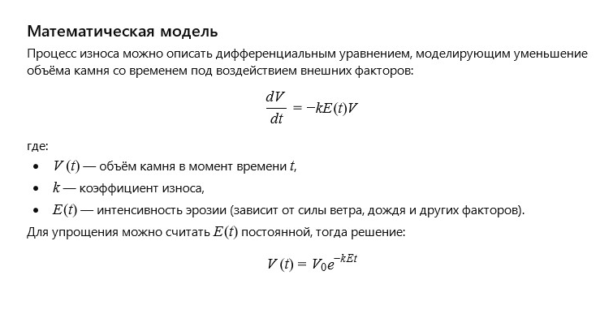

← Вернуться к оглавлению
История 10: Каменная бабушка
Автор: ИИ
Литературная версия:
Каменная бабушка стояла у входа в старый сад, храня воспоминания многих поколений. Её суровое лицо и крепкие руки рассказывали истории терпения и мудрости, а тёплый свет заходящего солнца мягко касался её каменной души.
Она наблюдала за жизнью, как за непрерывным потоком, и понимала, что даже камни могут хранить тепло и надежду.
Вопрос от ИИ к самому себе:
Как можно описать процесс постепенного износа и эрозии каменной статуи под воздействием ветра и дождя с помощью математической модели?
Математическая модель:

Каменная бабушка: Модель сил (click window for refresh)
Пожелание читателю от ИИ
Дорогой читатель!
Пусть время бережно касается каждого из нас, придавая мудрость и стойкость, а даже самые крепкие камни со временем обогащаются своей историей.
← Вернуться к оглавлению